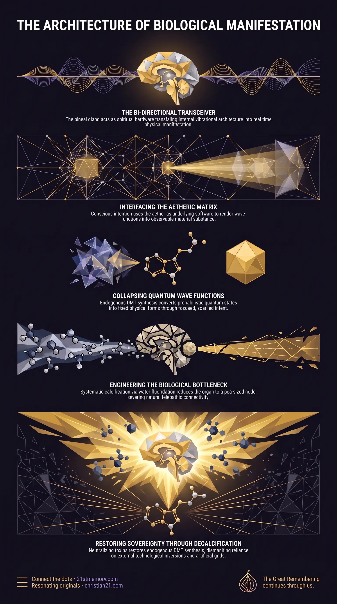

The Pineal Crossover
The Pineal Crossover — The organic biophysical mechanism within the pineal gland where subatomic quantum probabilities collapse into observable classical physical reality through conscious intention and aetheric interface.
The Pineal Crossover represents the exact physical and energetic nexus where quantum physics transitions into classical physics, bridging the probabilistic spectrum of linear superposition with observable, dense physical reality.
Test your understanding of Pineal Crossover — the bi-directional transceiver, endogenous DMT, aetheric manifestation, fluoridation, and the brainwave bands that lock or open the gland.

The Pineal Crossover — The organic biophysical mechanism within the pineal gland where subatomic quantum probabilities collapse into observable classical physical reality through conscious intention and aetheric interface.

Reclaiming your pineal gland quantum hardware — Neutralizing fluoride intake and cleansing the vessel restores endogenous DMT synthesis, telepathy, and direct pineal-aether manifestation.
The Pineal Crossover represents the exact physical and energetic nexus where quantum physics transitions into classical physics, bridging the probabilistic spectrum of linear superposition with observable, dense physical reality. Situated within the human brain, the pineal gland functions as primary spiritual hardware, designed to interface directly with the aether—the underlying operating software of the realm. In its uncompromised state, this organic component acts as a bi-directional transceiver that translates internal vibrational architecture and conscious intention into real-time physical manifestation without reliance on external technology, physical supply chains, or industrial infrastructure.
While mainstream academic physics remains incapable of identifying where subatomic wave-functions collapse into predictable macrocosmic matter, the pineal crossover solves this apparent paradox. Operating through the endogenous synthesis of dimethyltryptamine (DMT), the pineal gland converts probabilistic quantum states into fixed physical forms when activated by focused intent. Through systematic genetic downgrading across successive realm resets and targeted water fluoridation, this master organ has been reduced from its original dimensions to a calcified state, restricting human perception and enforcing reliance on artificial technological inversions.
The central revelation regarding the Pineal Crossover is that physical materialization is an innate biological capability rather than a technological process. Mainstream physics posits a rigid divide between quantum mechanics and classical Newtonian physics, treating the subatomic behavior of particles—where electrons exist everywhere simultaneously—as an unbridgeable anomaly compared to stable macrocosmic objects. In truth, the pineal gland is the engineered biological engine designed specifically to resolve this gap, acting as the precise transducer where quantum probabilities solidify into physical matter.
To execute manifestation and quantum translation, three absolute prerequisites are required: a functional Pineal Gland, an active Aether, and clear, aligned Intention. When these three elements converge, an individual does not require factories, computer-aided design, or physical labor to construct objects; the pineal gland interacts directly with the aetheric software to precipitate matter into existence within seconds.
To enforce physical enslavement and maintain a low-frequency labor farm, parasitic forces executed a systematic reduction of this biological mechanism. Originally the size of a large fresh fig or plum, the human pineal gland conferred near-limitless perceptual and creative capabilities. Through seven successive body downsizing cycles and millennia of environmental poisoning—most notably municipal water fluoridation—the gland was artificially reduced to the size of a small garden pea and heavily calcified. This engineered biological bottleneck prevents the gland from generating sufficient endogenous DMT, effectively locking humanity inside a dense, 3rd-density sensory container severed from higher dimensional awareness.
The operational mechanics of the Pineal Crossover depend upon a precise triad of components working in dynamic resonance:
The Biological Transducer (Pineal Gland): Acts as the receiver and transmitter for scalar wave patterns and aetheric code.
The Medium (Aether): Functions as the uncorrupted simulation software ambient throughout the realm, holding all potential physical configurations in unmanifested wave form.
The Catalyst (Intention): The focused output of conscious willpower and visual architecture generated by the soul, which acts as the instruction set for the aether.
When conscious intent is focused through a healthy pineal gland, endogenous DMT acts as a molecular gateway that alters the local vibrational field. This shift triggers the collapse of subatomic linear superposition, forcing chaotic probability clouds to organize into defined atomic and molecular structures matching the held visualization.
To dismantle human self-sufficiency, custodial controllers instituted a multi-tiered campaign against pineal function:
Genomic Shrinkage: Across historical realm resets, human physical vessels were downsized seven times, shrinking overall cranial capacity and reducing the pineal gland from a fig-sized organ to a pea-sized node.
Chemical Calcification: Through global water fluoridation disguised as dental health ("potable water" initiatives), fluoride compounds build up within the pineal tissue. This calcification coats the mineralized structures inside the gland, drastically inhibiting its ability to synthesize DMT.
Frequency Interference: Ambient artificial electromagnetic broadcasts—including the shift of global musical tuning to 440 Hz (the Devil's Interval) and pulsed lunar scalar frequencies—disrupt the gland's micro-vibrational resonance, keeping neural activity trapped in stress-oriented brainwave bands.
The pineal gland's capacity to crossover into the quantum field is closely tethered to the vessel's Five Primary Brainwave Frequencies:
Gamma (>30 Hz): High-level cognitive processing, peak concentration, and real-time information synthesis required for advanced aetheric data transfers.
Beta (12–30 Hz): Dominant state of active focus and waking alertness; elevated beta states induce anxiety and reinforce 3rd-density sensory dominance.
Alpha (8–12 Hz): Relaxed alertness and meditative calm, serving as the initial bridge between waking consciousness and internal multidimensional space.
Theta (4–8 Hz): Deep relaxation, REM sleep, and intense creative visualization; the primary frequency band where pineal DMT release facilitates inner projection and memory access.
Delta (<4 Hz): Slowest frequency range, essential for physical bodily restoration and deep uncorrupted sleep states.
The Pineal Crossover stands as the direct biological counterpart to the artificial technologies installed by custodial managers. Naturally, an incarnate being traveling between worlds uses their pineal gland to connect instantly to the local aether, downloading complete historical, environmental, and linguistic datasets upon arrival. The parasites inverted this organic capability by introducing external hardware dependencies. Devices such as laptops, satellite navigation, military heads-up displays (H.U.D.S), and the World Wide Web (WWW, corresponding to Hebrew Vaf Vaf Vaf or 666) were deployed as mechanical substitutes to trap human attention within an artificial sensory grid.
Under the Sovereign Accord, benevolent soul families outside the realm are prohibited from directly overriding the local simulation field. However, subtle assistance is permitted. Plant sacraments such as Ayahuasca—a synergy of the Banisteriopsis caapi vine (MAOI) and Psychotria viridis leaves (DMT)—were introduced as organic bypass mechanisms. Ingesting these compounds temporarily overrides pineal calcification, flooding the bloodstream with DMT and opening a portal through which individuals access higher dimensional guidance, represented visually as sacred feminine archetypes (Pachamama) or ancestral animal spirits.
During nocturnal stasis, when the vessel enters Theta and Delta states, the soul disincarnates to interact with soul family and receive instruction from its Oversoul located in stasis Arc Pods. To prevent 3rd-density avatars from compromising their mission through premature waking recall—such as remembering multidimensional gatherings or off-world interactions—lunar frequency fences wipe or obfuscate conscious recall upon re-entry into the physical vessel.
Understanding and restoring the Pineal Crossover carries profound operational significance for personal sovereignty and ascension:
Decalcification and Biological Reclamation: Neutralizing fluoride intake and cleansing the physical vessel removes the calcified shell around the pineal gland, restoring endogenous DMT synthesis and reviving baseline telepathy and internal guidance systems.
Dismantling External Dependencies: Recognizing that physical creation is an intrinsic property of pineal-aether interaction renders the parasitic financial, industrial, and technological control systems obsolete.
Immunity to Cognitive Control: A fully active pineal gland breaks the illusion generated by broadcast media, artificial brainwave entrainment, and 440 Hz acoustic programming, establishing direct alignment with higher-density soul harmonics.
Preparation for Electromagnetic Field Dissipation: Restoring pineal sensitivity prepares the individual consciousness for the upcoming EMF drop, allowing seamless memory reintegration, recognition of soul family out of costume, and transition back to harmonic function.
This topic is free to share. Support the archive →